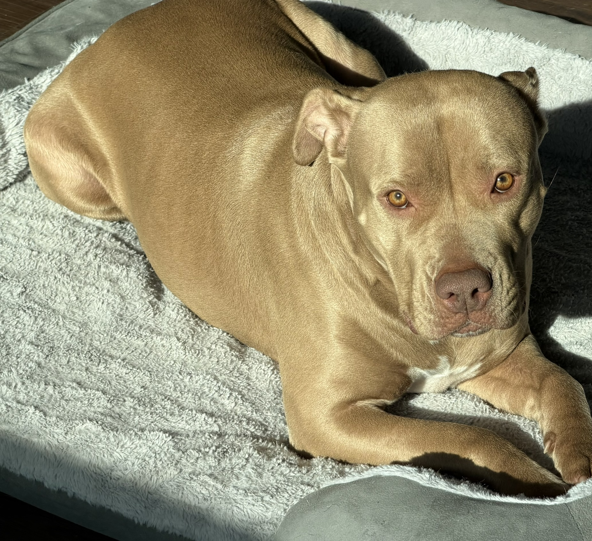

My Journey
"From Service to Software."
I am Koran (Hack) Hackman, a 31-year-old Army veteran transitioning into the world of Software Engineering. My military background instilled a discipline for precision and a passion for complex problem-solving—traits that I now apply to building robust, accessible web applications.
I am preparing to start an MSBA program at WashU in Fall 2026. My goal is to bridge the gap between raw data and actionable insights using modern full-stack technologies.
Proof of Tools
Evidence of environment configuration and module completion.
1. Terminal Customization
Demonstrating custom ZSH aliases configured in Module 1.

2. GitHub Repository
My first repository, demonstrating Git workflow and branching.

3. GitHub Profile
Activity history and personalized profile overview.